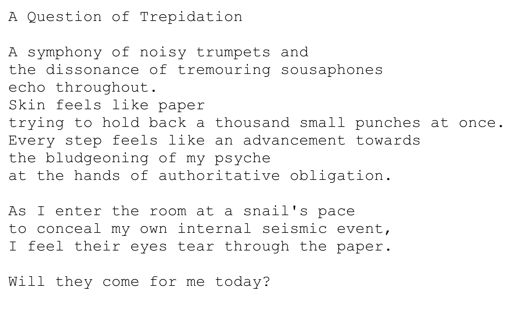

February ’22 Creative Prompt Competition Winner – Why we Stand Against Bullying
“A Question of Trepidation”
‘A Question of Trepidation’ illuminates the perspective of a student entering a classroom they share with others that have bullied them.
Although I am a University student now, I still recall those feelings from middle school quite vividly. I experience social anxiety as an adult, and am often seen as “different”. As a result, people always found me difficult to understand in my mindset and behaviour. I was often seen as an affront to their worldview, simply by existing as myself.
I hope that people of any age who see their experiences in what I write but may not be able to easily express themselves are able to take this to someone they trust and can say “I feel like this”, and get the support they need from both professionals and loved ones. A goal I have in mind when I write is to paint a verbal picture of complicated emotions in a way that is easier to understand.
A project by NYAC, an initiative from Mood Disorders Society of Canada